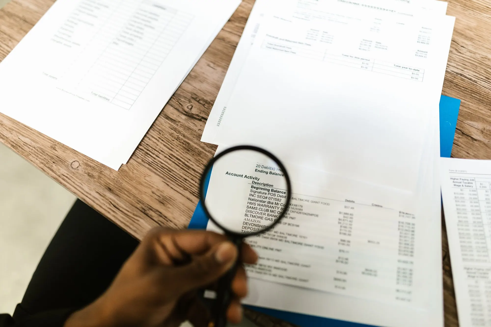

Your journey, step by step.
Four clear stages from first conversation to departure, with our team beside you.
- 1ConsultationDiscuss your goals
- 2EvaluationReview your profile
- 3MatchingOpportunities and interviews
- 4DepartureDocuments and travel
Timelines vary by role, employer and destination. Outcomes such as job offers and visas are not guaranteed.
Start with an honest conversation
Tell us about your skills, experience and goals. We discuss which roles and destinations may suit you.
- Share your background and the work you want to do
- Talk through destination and sector options
- Hear what is and is not realistic for your profile
- Ask any question before you decide to continue
Consultation is a discussion of options. It is not an offer of work.
Review your qualifications and documents
We look closely at your qualifications, work history and paperwork to see how well they fit the roles you want.
- Qualification and certificate review
- Work experience and skills check
- Checks that your core documents are complete and valid
- Guidance on any gaps and how to address them
Employers and destination authorities set their own requirements.

Match with suitable opportunities
When a suitable opening is available, we put your profile forward and prepare you for any interview.
- Suitable opportunities shared when they are available
- Interviews arranged and explained in advance
- Selection decided by the employer
- Any offer reviewed with you in writing
Opportunities depend on employer demand. Placement is never guaranteed.
Verify, apply and prepare to travel
Once you accept an offer, we help with verification, visa coordination and getting ready to travel.
- Verification of your documents
- Visa application coordination
- Medical or other checks where the destination requires them
- Travel preparation and a pre-departure briefing
Visa decisions rest with the issuing authorities. Approval is never guaranteed.
Ready to take the first step?
Send us your details and we will start with a conversation about your goals.